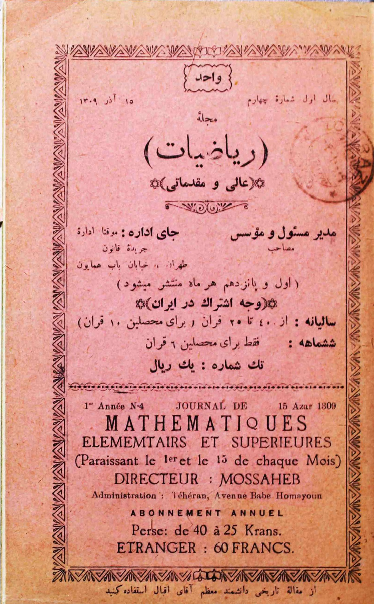
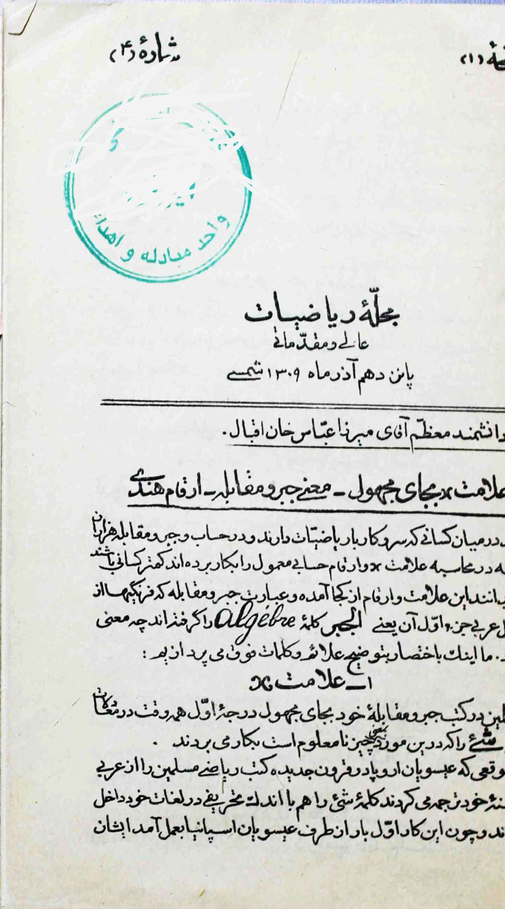
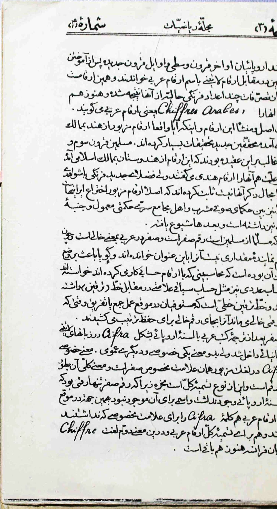

The symbol x for the unknown
Where did the sign x, the word algebra, and the “Arabic” numerals come from? A short history from a 1930 Tehran journal — given here in full, in Persian and English, with the original pages.

Perhaps, among those who deal with mathematics — who in arithmetic, algebra and the solving of equations (jabr wa muqābala) have used the sign and the numerals of reckoning thousands of times — there are few who know where this sign and these numerals came from, or what the phrase jabr wa muqābala means: the phrase from whose Arabic first part, al-jabr, Europeans formed the word algèbre. Let us now briefly explain the signs and words above.
1The sign x
In their books of algebra (jabr wa muqābala), the Muslims always used the word shayʾ — “thing,” here meaning the unknown quantity — for the first-degree unknown in equations.
When, in the modern centuries, the Christians of Europe were translating the mathematical books of the Muslims from Arabic into their own languages, they also took the word shayʾ into their own vocabulary, with a slight alteration. And because this was first done by the Christians of Spain, they pronounced the Arabic word shayʾ as xeï and adopted that very form. The first to do this was a Spanish mathematician named Pedro, of the people of the town of Alcalá (al-Qalʿa). Later, once writing equations in the form of simple algebraic notation became customary, the Europeans took the first letter of the word xeï — the altered shayʾ — namely x, for the first-degree unknown, and for unknowns of higher degree they took its powers.
2The meaning of jabr and muqābala
In Arabic, jabr means the setting of what is broken, and compensation; and muqābala means bringing a thing’s equal against it. In solving algebraic equations — since the Muslims had no formulae — they were obliged to carry out the operations of reducing an equation in their heads and to write them out in words. In particular, of the two sides of an equation, the side that held a negative quantity they would free of that negative quantity by adding the same amount, with a positive sign, to both sides of the equation. And because, in place of that negative quantity removed from one side, an equal positive quantity was added to the other side and its place was, so to speak, “filled,” they called this operation jabr. For example, in the equation
since one side of the equation holds a negative quantity, they would add \(30x\) to both sides, so that it took the form
and precisely because, in place of the \(-30x\) removed from one side, a \(+30x\) was added to the other and the missing part was “restored,” they called the operation jabr.
To reach the answer, another operation is also needed: subtracting the known numbers from one another, and the unknown quantities from one another. In the equation above, for instance, one must subtract 40 from 250 and bring the equation to the form \(30x = 210\) — or, in the language of the Islamic mathematicians, set the two parts, the known and the unknown, against each other. This operation was named muqābala; and the science that treated these two operations and set out their methods was, among them, called the science of al-jabr wa’l-muqābala.
3The Hindu numerals
The numerals of reckoning — that is, the numbers from (1) to (9), which the old Islamic mathematicians called the Hindu numerals — the Europeans, in the late Middle Ages and the early modern period, after learning them from the Muslims, called the Arabic numerals, as opposed to the Latin numerals. It is these very numerals from which, after several modifications, the present-day European figures derive; and Europeans still call them Chiffres arabes — that is, “Arabic numerals.” On the origin and source of these numerals, and whether they truly came from India to the Islamic lands, modern scholars have done a great deal of research. The Muslims of the third and fourth centuries [AH] mostly held that these numerals came from Hindustan to the Islamic lands, and for this reason called them the Hindu numerals; but recent European savants, with evidence there is no room to cite here, have shown that the numerals in question are in fact an Iranian invention — that at first they were in use among the Sufi-minded sages and the people of secret assemblies as a kind of wisdom, with a symbolic aspect, and only later became widespread.
The one figure that is certainly from the Muslims is the figure zero (ṣifr). Ṣifr in Arabic means “empty,” and because that figure stands for no quantity, it was called by this name. It seems the reason for its introduction was that the calculators — those who worked with the numerals of reckoning — wished to have, in numerical computation as in siyāq (account) notation, a mark to set against a blank (the tarqīn stroke). The tarqīn stroke is the line that the accountants (mustawfīs), in the course of addition or subtraction, would draw in place of an empty digit, when a digit’s place was left vacant, so as to keep the order.
After the Arabic books were translated into the European languages, the word ṣifr entered Latin and Spanish in the form Cifra — but with two senses, one particular and one general. The particular sense of Cifra in those languages is that very special sign for zero; its general sense is “figure” at large. This is of the kind where the whole is named by the part: for the figure zero was the only figure that did not exist in the European languages and had no name, so that, in adopting the Arabic numerals, they took the word Cifra both for the special sign they had lacked and for the naming of the Arabic numerals as a whole. And in this second sense, the word Chiffre still survives in French.


Source
- Abbas Eqbal. “علامت x بجای مجهول؛ معنی جبر و مقابله؛ ارقام هندی.” Riyāziyāt (Mathématiques Élémentaires et Supérieures), Year 1, No. 4, 15 Āzar 1309 [6 December 1930]. Tehran: directed by Gholām-Hossein Mosaheb.